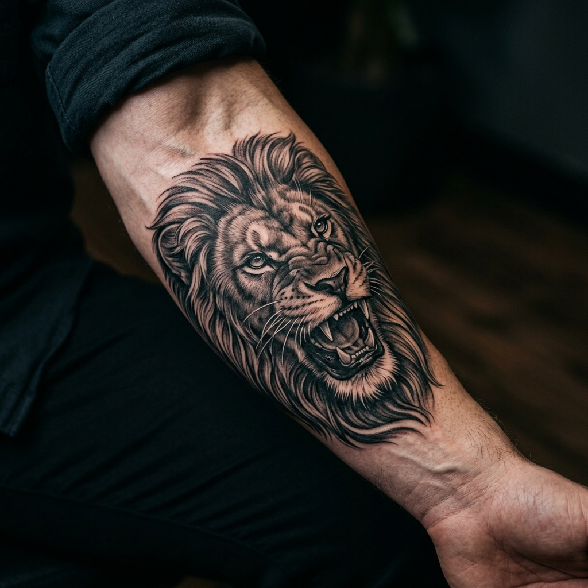

The body art landscape is moving away from generic imagery toward architectural precision and high-concept minimalism.
As we move deeper into 2026, the 'Editorial' aesthetic is dominating the industry. Clients at DRAVEN are increasingly seeking pieces that look less like traditional tattoos and more like fine-art engravings or high-fashion illustrations.
Micro-Realism Evolution
Thanks to advancements in single-needle technology, we are now able to pack photographic detail into incredibly small spaces. Think hyper-realistic eyes, micro-botanicals, and miniature Renaissance sculptures. The key to these pieces is high-contrast shading that ensures longevity despite the fine scale.

Sacred Symmetry & Geometry
Mandala work has evolved into 'Sacred Symmetry'. It's no longer just a standalone pattern; it's an architectural overlay that interacts with the body's natural movement. Using fractal geometry, our artists create designs that look like they've grown directly out of the anatomy.
Curated Piercing Projects
In the world of piercing, 2026 is the year of the 'Curated Ear'. We are moving away from random placements toward cohesive projects that use mismatched yet harmonious 14k gold jewelry to tell a visual story across the ear cartilage.
Future-Proof Your Ink
Want a design that stays ahead of the curve? Consult with our trend-setting residents at our Art District sanctuary.
Book Trend Consultation